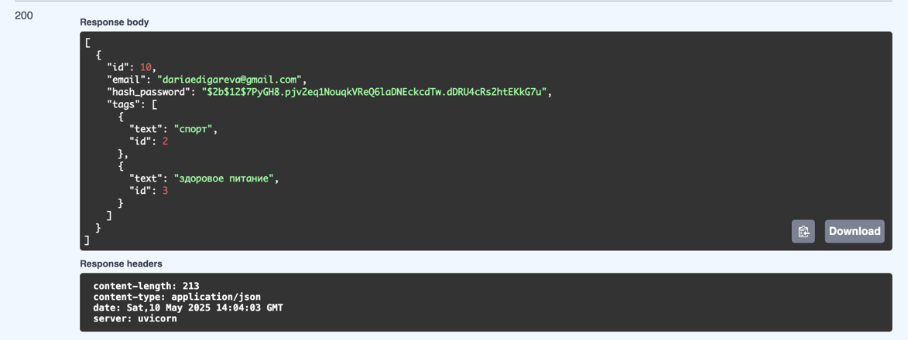
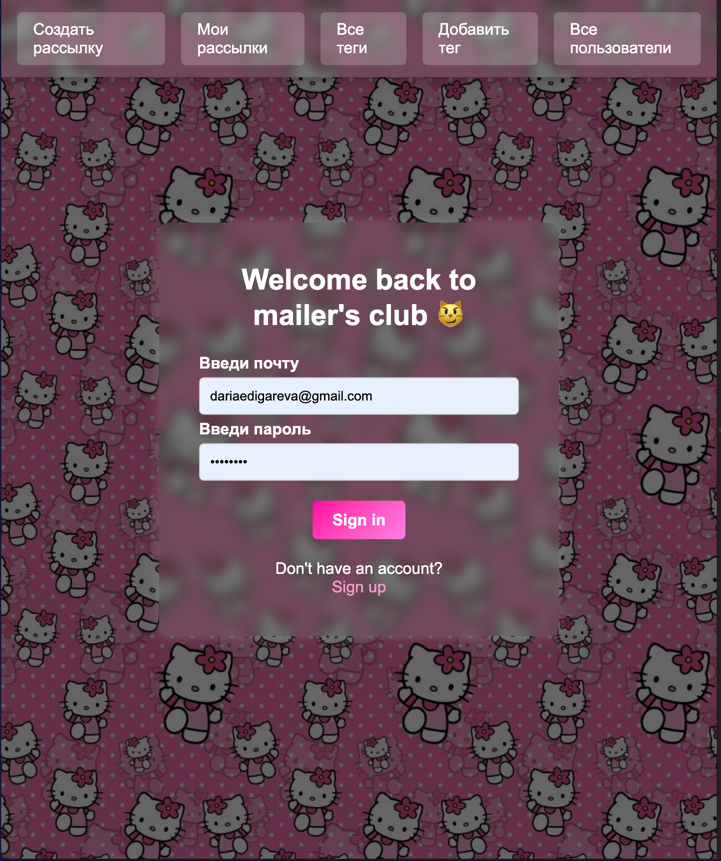
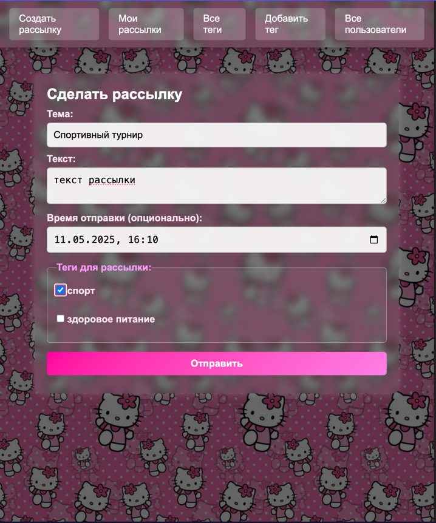
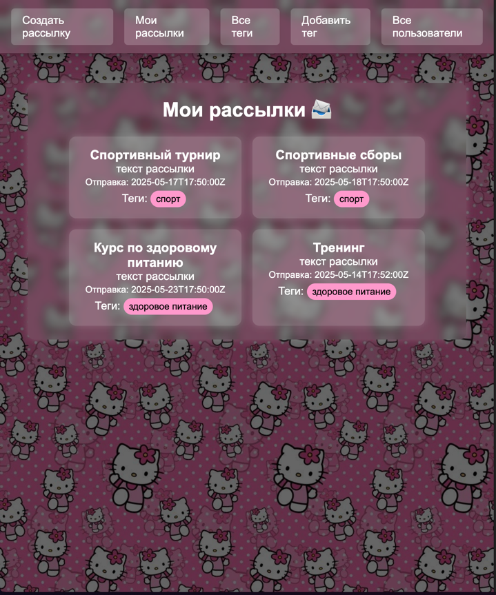

Лабораторная работа 1. Реализация серверного приложения FastAPI
Проект и архитектура
Сервис рассылок позволяет организовать отправку электронных писем группам пользователей, объединённых по тегам: вы создаёте рассылку с текстом и списком тегов, а система автоматически находит всех подписанных на эти теги пользователей и ставит задачи на отправку писем в фоновом режиме через Celery с возможностью отложенной доставки.
В проекте реализована микросервисная архитектура на базе FastAPI и Celery, где каждый компонент развёрнут в своём контейнере:
- db (PostgreSQL) — хранит основную бизнес-логическую информацию (пользователи, теги, рассылки).
- redis — брокер задач для Celery.
- backend — основной API-сервис: управление пользователями, тегами и рассылками.
- celery — воркер Celery, обрабатывающий отправку отложенных писем.
- admin — отдельный веб-интерфейс для администрирования (FastAPI + Jinja2).
docker-compose.yml:
services:
db:
image: postgres:15
container_name: db_newsletter
env_file: backend/.env
ports:
- "5432:5432"
environment:
- POSTGRES_PASSWORD=postgres
restart: unless-stopped
volumes:
- postgres_data:/var/lib/postgresql/data/
- /etc/localtime:/etc/localtime:ro
- /etc/timezone:/etc/timezone:ro
redis:
image: redis:7
container_name: redis_app
backend:
build:
context: ./backend
dockerfile: Dockerfile
env_file: backend/.env
container_name: mailer_app
command: [ "uvicorn", "main:app", "--host", "0.0.0.0", "--port", "8000" ]
ports:
- "9999:8000"
depends_on:
- db
- celery
restart: unless-stopped
celery:
build:
context: ./backend
env_file: backend/.env
container_name: celery_app
command: celery -A celery_tasks.setup_celery worker --loglevel=info
depends_on:
- redis
admin:
build:
context: ./admin
dockerfile: Dockerfile
env_file: admin/.env
container_name: mailer_web_app
command: [ "uvicorn", "main:app", "--host", "0.0.0.0", "--port", "8000" ]
ports:
- "9998:8000"
depends_on:
- db
restart: unless-stopped
volumes:
postgres_data:
ORM-модели (SQLAlchemy)
Используется SQLAlchemy + relationship для связей many-to-many между пользователями и тегами. Пример модели User:
from sqlalchemy import Integer
from sqlalchemy.orm import Mapped, mapped_column, relationship
from db.database import Base
from tags.models import Tag
class User(Base):
__tablename__ = "user"
id: Mapped[int] = mapped_column(Integer, primary_key=True)
email: Mapped[str] = mapped_column(unique=True)
hash_password: Mapped[str]
tags: Mapped[list[Tag]] = relationship(
'Tag',
secondary='user_tag',
back_populates='users',
lazy='selectin'
)
Вложенные сущности в ответе get_all_users

CRUD API
Для каждой сущности реализован набор CRUD-эндпоинтов с аннотацией типов:
- Пользователи (
/user): создание, фильтрация, получение по ID и email, обновление, удаление, привязка тега. - Теги (
/tag): создание, список всех. - Рассылки (
/newsletter): создание с отложенной отправкой, получение, обновление, удаление.
Пример эндпоинта и сервисного слоя для создания рассылки
Роутер вызывает метод сервиса NewsletterService, в котором сначала Pydantic-модель NewsletterCreateRequest переводится в DTO через model_validate и сохраняется в БД, затем для каждого tag_id создаётся связь в таблице newsletter_tag. После этого по тегам рассылки вызывается user_tags_service.get_users_by_tag, чтобы получить список email-получателей, и для каждого из них через send_letter.apply_async(..., eta=newsletter.target_time) ставится отложенная задача в Celery.
Код роутера и соответствующего сервисного метода,
отвечающих за создание новой рассылки, привязку тегов и постановку отложенных задач на отправку писем через Celery.
@router.post("")
async def create_newsletter(
newsletter: NewsletterCreateRequest,
service=Depends(get_newsletter_service),
) -> NewsletterResponse:
created = await service.create_newsletter(newsletter)
return created
@dataclass
class NewsletterService:
newsletters: NewsletterRepo
tags: TagRepo
newsletter_tags: NewsletterTagRepo
async def create_newsletter(
self,
newsletter: NewsletterCreateRequest,
) -> NewsletterResponse:
create_dto = NewsletterCreate.model_validate(newsletter)
created = await self.newsletters.create(create_dto)
logger.info(created.model_dump())
for tag_id in newsletter.tags:
dto = NewsletterTagCreate(
tag=tag_id,
newsletter=created.id,
)
await self.newsletter_tags.create(dto)
created = await self.newsletters.get(created.id)
# Получаем пользователей по тегам и сразу ставим задачи отправки
user_tags_service = get_user_tag_service()
recipients = await user_tags_service.get_users_by_tag(
tags=[tag.text for tag in created.tags]
)
for recipient in recipients:
message = MessageSchema(
subject=created.subject,
recipients=[recipient], # noqa
body=created.text,
subtype=MessageType.html
)
send_letter.apply_async(
args=(json_utils.dumps(message, cls=MessageSchemaEncoder),),
eta=newsletter.target_time
)
logging.getLogger(__name__).info(f"Queued email to {recipient}")
return created
Система миграций (Alembic)
Проект настроен на автоматические миграции через Alembic.
Аннотация типов
Во всех роутерах, сервисах и репозиториях используются аннотации и ConfigDict(from_attributes=True) для чтения из ORM:
@router.get("")
async def get_all_newsletter(
newsletter_service = Depends(get_newsletter_service)
) -> list[NewsletterResponse]:
res = await newsletter_service.get_all_newsletter()
return res
class NewsletterUpdate(BaseModel):
text: str
subject: str
target_time: Optional[datetime] = None
model_config = ConfigDict(from_attributes=True)
Структура проекта
├── admin
│ ├── Dockerfile
│ ├── auth
│ │ ├── auth_form.py
│ │ ├── auth_helper.py
│ │ ├── auth_service_interface.py
│ │ ├── dependencies
│ │ │ └── services.py
│ │ ├── exceptions.py
│ │ └── schemas.py
│ ├── config.py
│ ├── main.py
│ ├── midlewares
│ │ └── auth_midleware.py
│ ├── requirements.txt
│ ├── routes
│ │ ├── __init__.py
│ │ ├── auth_routes.py
│ │ ├── dependencies
│ │ │ └── services.py
│ │ ├── newsletter_router.py
│ │ ├── tag_router.py
│ │ └── user_router.py
│ ├── services
│ │ ├── auth_service.py
│ │ ├── dependencies
│ │ │ └── services.py
│ │ ├── newsletter_service.py
│ │ ├── schemas.py
│ │ ├── tag_service.py
│ │ └── user_service.py
│ ├── static
│ │ ├── css
│ │ │ ├── auth.css
│ │ │ ├── base.css
│ │ │ ├── newsletter.css
│ │ │ ├── newsletter_all.css
│ │ │ ├── newsletter_details.css
│ │ │ ├── tag.css
│ │ │ ├── tags.css
│ │ │ ├── user.css
│ │ │ ├── user_newsletters.css
│ │ │ └── users.css
│ │ └── images
│ │ └── китти.jpeg
│ └── templates
│ ├── __init__.py
│ ├── auth.html
│ ├── base.html
│ ├── newsletter.html
│ ├── newsletter_all.html
│ ├── newsletter_details.html
│ ├── signup.html
│ ├── tag.html
│ ├── tag_all.html
│ ├── user.html
│ ├── user_all.html
│ └── user_newsletters.html
├── backend
│ ├── Dockerfile
│ ├── __init__.py
│ ├── abstractions
│ │ ├── AbstractRepoInterface.py
│ │ ├── AbstractRepository.py
│ │ └── __init__.py
│ ├── alembic.ini
│ ├── celery_tasks
│ │ ├── __init__.py
│ │ ├── setup_celery.py
│ │ └── tasks.py
│ ├── config.py
│ ├── db
│ │ ├── __init__.py
│ │ └── database.py
│ ├── decoder.py
│ ├── docker
│ │ └── start_only_db.bat
│ ├── mail.env
│ ├── mail.env.example
│ ├── main.py
│ ├── migrations
│ │ ├── README
│ │ ├── __init__.py
│ │ ├── env.py
│ │ ├── script.py.mako
│ │ └── versions
│ │ ├── 0db08c43dc72_add_timestamp_with_timezone.py
│ │ ├── 556eade48481_newsletter_target_time.py
│ │ ├── 5e3728acfa88_first.py
│ │ ├── 864ebd0009a9_third.py
│ │ ├── 98b03d0a93c1_second.py
│ │ ├── __init__.py
│ │ ├── cf77bb0027a1_add_userlogin.py
│ │ └── d65fdbfa9353_add_unique_to_emails.py
│ ├── newsletter
│ │ ├── __init__.py
│ │ ├── delayed_letter_service.py
│ │ ├── dependencies
│ │ │ ├── __init__.py
│ │ │ ├── repositories.py
│ │ │ └── services.py
│ │ ├── models.py
│ │ ├── newsletter_service.py
│ │ ├── repository.py
│ │ ├── router.py
│ │ └── schemas.py
│ ├── newsletter_tag
│ │ ├── __init__.py
│ │ ├── dependencies
│ │ │ ├── __init__.py
│ │ │ └── repositories.py
│ │ ├── models.py
│ │ ├── repository.py
│ │ └── schemas.py
│ ├── requirements.txt
│ ├── tags
│ │ ├── __init__.py
│ │ ├── dependencies
│ │ │ ├── __init__.py
│ │ │ ├── repositories.py
│ │ │ └── services.py
│ │ ├── models.py
│ │ ├── repository.py
│ │ ├── router.py
│ │ ├── schemas.py
│ │ └── tag_service.py
│ ├── user
│ │ ├── __init__.py
│ │ ├── dependencies
│ │ │ ├── __init__.py
│ │ │ ├── repositories.py
│ │ │ └── services.py
│ │ ├── models.py
│ │ ├── repository.py
│ │ ├── router.py
│ │ ├── schemas.py
│ │ └── user_service.py
│ ├── user_newsletter
│ │ ├── __init__.py
│ │ ├── models.py
│ │ ├── repository.py
│ │ └── schemas.py
│ └── user_tag
│ ├── __init__.py
│ ├── dependencies
│ │ ├── __init__.py
│ │ ├── repositories.py
│ │ └── services.py
│ ├── models.py
│ ├── repository.py
│ ├── schemas.py
│ └── user_tag_service.py
└── docker-compose.yml
Аутентификация и безопасность
Реализована JWT-аутентификация и хэширование паролей через bcrypt.
Пример методов в AuthService:
def hash_password(password: str) -> str:
return bcrypt.hashpw(password.encode(), bcrypt.gensalt()).decode()
def check_password(password: str, hashed: str) -> bool:
return bcrypt.checkpw(password.encode(), hashed.encode())
def _generate_tokens(self, user_id: int) -> Tokens:
now = datetime.now(tz=timezone.utc)
exp = now + timedelta(seconds=self.auth_settings.access_token_lifetime_seconds)
token = jwt.encode({'exp': exp, 'user_id': user_id},
key=self.auth_settings.secret_key.get_secret_value(),
algorithm='HS256')
return Tokens(access_token=token)
Промежуточное midleware проверяет наличие и валидность JWT в cookie и перенаправляет на страницу логина при отсутствии:
async def check_for_auth(request: Request, call_next):
tokens = Tokens(access_token=request.cookies.get("access_token", ""))
valid = await auth_service.check_tokens(tokens)
if not valid["is_valid"]:
return RedirectResponse(f"/auth?destination={request.url.path}", status_code=303)
request.state.user_id = valid["user_id"]
return await call_next(request)
Реализован фронтенд на основе FastAPI + Jinja2: все страницы оформлены через HTML-шаблоны и подключаемые файлы CSS.
Пример страницы входа:

Пример страницы создания рассылки

Пример страницы моих рассылок
